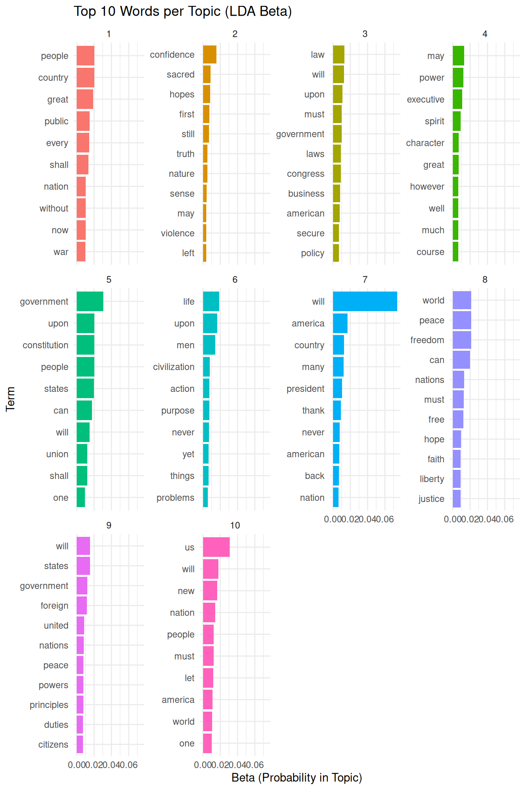
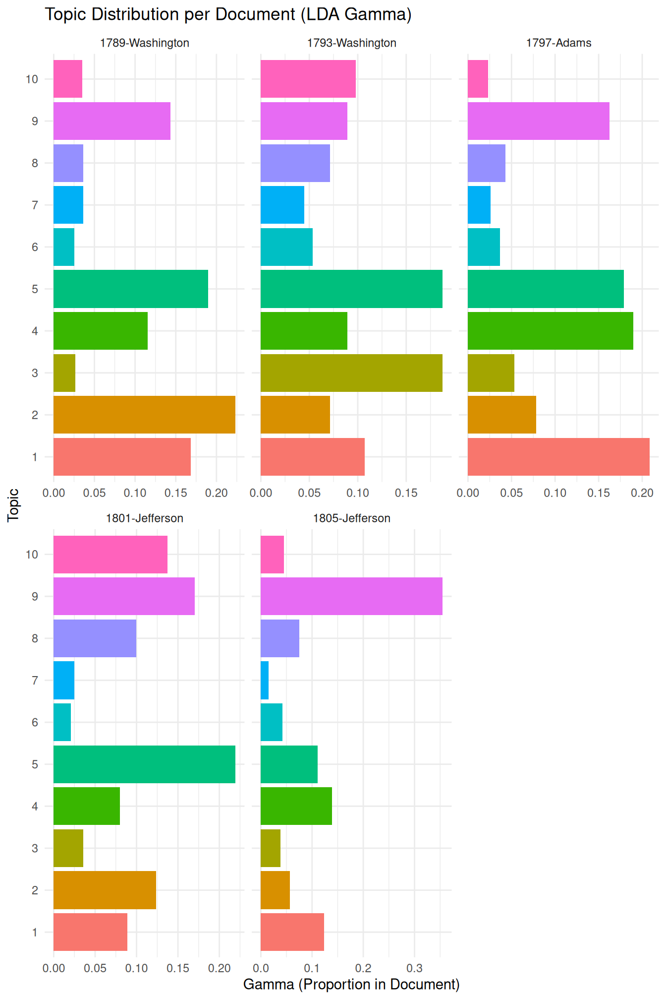
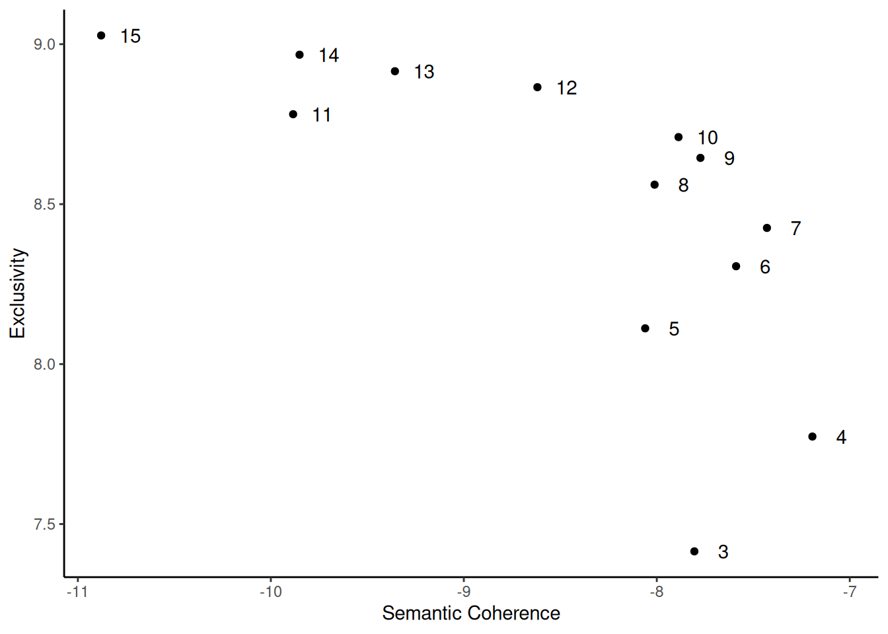

Chapter 9 Unsupervised Methods
While supervised models often work fine for text classification, one disadvantage is that we need to set specifics for the model. As an alternative, we can not specify anything and have R find out which classifications work. There are various algorithms to do so, of which we here will focus on Latent Dirichlet Allocation (LDA); a ‘seeded’ version of LDA that uses information from other sources to improve the results of the LDA; and a Structural Topic Model.
9.1 Latent Dirichlet Allocation
Latent Dirichlet Allocation, or LDA, relies on the idea is that each text is a mix of topics, and each word belongs to one of these. To run LDA, we will use the topicmodels package, and use the inaugural speeches as an example. First, we will use the convert function to convert the data frequency matrix to a data term matrix as this is what topicmodels uses:
library(topicmodels)
inaugural_dtm <- convert(data_inaugural_dfm, to = "topicmodels")Then, we fit an LDA model with 10 topics. First, we have to define some a priori parameters for the model. Here, we will use the Gibbs sampling method to fit the LDA model (Griffiths & Steyvers, 2004) over the alternative VEM approach (Blei et al., 2003). Gibbs sampling performs a random walk over the distribution so we need to set a seed to ensure reproducible results. In this particular example, we set five seeds for five independent runs. We also set a burn-in period of 2000 as the first iterations will not reflect the distribution well, and take the 200th iteration of the following 1000:
burnin <- 2000
iter <- 1000
thin <- 200
seed <- list(42,5,24,158,2500)
nstart <- 5
best <- TRUEThe LDA algorithm estimates topic-word probabilities as well as topic-document probabilities that we can extract and visualize. Here, we will start with the topic-word probabilities called beta. To do this, we will use the tidytext package which is part of the tidyverse family of packages. Central to the logic of tidyverse packages is that it does not rely on a document term matrix but represents the data in a long format (Welbers et al., 2017, p. 252). Although this makes it less memory efficient, this lends itself to effective visualisation. The whole logic of these packages is that it works with data which has columns (variables) and rows with single observations. While this is the logic most people know, but it is not always the quickest (and is also not used by quanteda). Yet, it always allows you to look at your data in a way most will understand. First, we run the LDA and have a look at the first 10 terms:
inaugural_lda10 <- LDA(inaugural_dtm, k=10,
method="Gibbs",
control=list(burnin=burnin,
iter=iter,
thin=thin,
seed=seed,
nstart=nstart,
best=best))
terms(inaugural_lda10, 10)## Topic 1 Topic 2 Topic 3 Topic 4 Topic 5 Topic 6
## [1,] "peace" "us" "business" "americans" "every" "never"
## [2,] "world" "new" "may" "citizens" "great" "must"
## [3,] "nations" "people" "congress" "freedom" "nation" "republic"
## [4,] "free" "america" "policy" "country" "men" "civilization"
## [5,] "freedom" "must" "states" "president" "life" "order"
## [6,] "can" "world" "executive" "never" "good" "war"
## [7,] "shall" "can" "made" "common" "part" "concern"
## [8,] "life" "nation" "necessary" "courage" "upon" "understanding"
## [9,] "may" "one" "trade" "day" "action" "tasks"
## [10,] "hope" "time" "hope" "across" "purpose" "production"
## Topic 7 Topic 8 Topic 9 Topic 10
## [1,] "change" "united" "government" "first"
## [2,] "generation" "liberty" "upon" "need"
## [3,] "journey" "human" "can" "love"
## [4,] "hands" "democracy" "people" "days"
## [5,] "weapons" "believe" "country" "things"
## [6,] "forth" "states" "progress" "back"
## [7,] "powerful" "alone" "must" "hand"
## [8,] "enduring" "security" "law" "friends"
## [9,] "greatness" "millions" "system" "unity"
## [10,] "words" "opportunity" "political" "president"Here, we can see that the first topic is most concerned with words referring to peace and freedom, the second with references to the people, the third with businesses, as so on. While we can interpret our topics this way, a better way might be to visualise the results. For this, we will use the tidy command to prepare the dataset for visualisation. Then, we tell the command to use the information from the beta column, which contains the probability of a word occurring in a certain topic:
library(tidytext)
library(dplyr)
library(ggplot2)
inaugural_lda10_topics <- tidy(inaugural_lda10, matrix="beta")If we would look into the dataset now, we would see that it has 63130 observations with 3 variables. These are the number of the topic, the word (the term) and the beta - the chance that the word occurs in that topic. We now want to visualise only the top ten words for each topic in a bar plot. Also, we want the graphs of each of these ten topics to appear in a single graph. To make this happen, we first have to select the top ten words for each topic. We do so again using a pipe (which is the %>% command). This pipe transports an output of a command to another one before saving it. So here, we take our data set and group it by topic using the group_by command. This command groups the dataset into 10 groups, each for every topic. What this allows us is to calculate things that we otherwise calculate for the whole data-set but here calculate for the groups instead. We then do so and select the top 10 terms (based on their beta value), using top_n. We then ungroup again (to make R view it as a single data-set), and use the arrange function to ensure the data-set sorts the topics in an increasing and the beta values in a decreasing fashion. Finally, we save this into a new object:
inaugural_lda10_topterms <- inaugural_lda10_topics %>%
group_by(topic) %>%
top_n(10, beta) %>%
ungroup() %>%
arrange(topic, -beta)If we now look at the data set, we see that it is much smaller and has the topics ordered. Yet, before we can plot this we have to ensure that (seen from top to bottom), all the beta for the first topic come first, then for the second topic, and so on. To do so, we use the mutate command, and redefine the term variable so that it is re-ordered based first on the term and then on the beta value. The result is a data frame with first the first topic, then the second topic etc., and with the beta values ordered within each topic. We then make the figure, with the terms on the horizontal axis and the beta values and the vertical axes, and have the bars this generates coloured by topic. Also, we switch off the legend (which we do not need) and use the facet_wrap command to split up the total graph (which would have 107 bars otherwise - 107 bars and not a 100 because some terms had the same value for beta). We set the options for the scales to be free as it might be that the beta values for some topics are larger or smaller than for the others. Finally, we flip the graphs and make the x-axis the y-axis and vice versa, as this makes the picture more clear:
inaugural_lda10_topterms %>%
mutate(term=reorder(term, beta)) %>%
ggplot(aes(term, beta, fill=factor(topic))) +
geom_col(show.legend=FALSE) +
facet_wrap(~ topic, scales="free") +
coord_flip()+
theme_minimal()
What is clear here is that looking at only the words in each topic only says so much. In the first topic, the term ‘peace’ is more important than anything else, and so is ‘us’ in topic number 2. Also, in topic number ten, we see that both ‘first’ and ‘need’ are of equal importance.
Another question we can ask is how much of each topic is in each of the documents. Put in another way: do certain documents talk more about certain topics than others? To see this, we first generate a new data frame with this information, known as the gamma value for each document:
inaugural_lda10_documents <- tidy(inaugural_lda10, matrix="gamma")We then go through similar steps to make the data set ready for use and prepare the graph. For the graph, the only steps we do different are to force R to label each topic on the axis (as otherwise it will treat it as a continuous variable and come up with useless values such as 7.5), and to give it a different look (using the theme_classic() command):
inaugural_lda10_toptopics <- inaugural_lda10_documents %>%
group_by(document) %>%
top_n(10, gamma) %>%
ungroup() %>%
arrange(topic, -gamma)inaugural_lda10_toptopics %>%
mutate(term=reorder(topic, gamma)) %>%
ggplot(aes(topic, gamma, fill=factor(topic))) +
geom_col(show.legend=FALSE) +
scale_x_continuous(breaks = c(1,2,3,4,5,6,7,8,9,10))+
facet_wrap(~ document, scales="free") +
coord_flip()+
theme_minimal()
Here, we see that in 1929 Hoover talked most often about topic 9 (focusing on government), Biden in 2021 focused on words like ‘us’ and ‘people’, while in 1945 Roosevelt seemed to favour both the people and topics referring to peace. Again, our exact conclusions of course depend on how we interpret the topics.
9.2 Seeded Latent Dirichlet Allocation
An alternative to the above approach is one known as seeded-LDA. This approach uses seed words that can steer the LDA in the right direction. One origin of these seed words can be a dictionary that tells the algorithm which words belong together in various categories. To use it, we will first load the packages and set a seed:
library(seededlda)
library(quanteda.dictionaries)
set.seed(42)Next, we need to specify a selection of seed words in dictionary form. While we can construct a dictionary ourselves, here we choose to use the Laver and Garry dictionary we saw earlier. We then use this dictionary to run our seeded LDA:
dictionary_LaverGarry <- dictionary(data_dictionary_LaverGarry)
seededmodel <- textmodel_seededlda(data_inaugural_dfm, dictionary = dictionary_LaverGarry)
terms(seededmodel, 20)## CULTURE ECONOMY ENVIRONMENT GROUPS INSTITUTIONS
## [1,] "people" "work" "production" "women" "president"
## [2,] "us" "economic" "productive" "race" "administration"
## [3,] "art" "opportunity" "planet" "racial" "continue"
## [4,] "music" "children" "population" "woman" "office"
## [5,] "operating" "economy" "products" "racism" "executive"
## [6,] "operation" "industrial" "environment" "ethnic" "rule"
## [7,] "new" "trade" "clean" "racing" "voices"
## [8,] "america" "confidence" "productivity" "day" "legislation"
## [9,] "nation" "equal" "produce" "body" "authority"
## [10,] "let" "cost" "product" "built" "democratic"
## [11,] "american" "poverty" "cleaner" "fire" "modern"
## [12,] "today" "care" "productions" "task" "agencies"
## [13,] "must" "welfare" "produced" "evil" "rules"
## [14,] "world" "education" "cleanse" "mind" "election"
## [15,] "one" "commerce" "productiveness" "spirit" "sovereignty"
## [16,] "know" "age" "car" "whether" "reforms"
## [17,] "americans" "health" "chemical" "put" "voice"
## [18,] "now" "private" "warming" "speaks" "elected"
## [19,] "time" "equality" "depletion" "serve" "process"
## [20,] "can" "jobs" "republic" "carried" "reform"
## LAW_AND_ORDER RURAL URBAN VALUES
## [1,] "force" "agriculture" "town" "history"
## [2,] "forces" "feed" "towns" "human"
## [3,] "determined" "agricultural" "story" "rights"
## [4,] "determination" "farm" "thank" "principles"
## [5,] "conviction" "farms" "friends" "past"
## [6,] "court" "forests" "young" "leadership"
## [7,] "determine" "farmers" "hear" "humanity"
## [8,] "terror" "villages" "learned" "maintain"
## [9,] "forced" "horseback" "bless" "preserve"
## [10,] "courts" "farmer" "prayer" "defend"
## [11,] "dealing" "countryside" "must" "leaders"
## [12,] "seize" "village" "together" "principle"
## [13,] "drugs" "lanes" "days" "proud"
## [14,] "officers" "landscape" "lost" "threat"
## [15,] "penalties" "man" "dreams" "pride"
## [16,] "convictions" "change" "protect" "heritage"
## [17,] "guarding" "light" "hearts" "historic"
## [18,] "lawless" "greatness" "right" "preserved"
## [19,] "illegal" "hands" "back" "integrity"
## [20,] "victims" "friends" "personal" "preservation"Note that using the dictionary has ensured that we only use the categories that occur in the dictionary. This means that we can look at which topics are in each inaugural speech and which terms were most likely for each of the topics. Let us start with the topics first:
topics <- topics(seededmodel)
topics_table <- ftable(topics)
topics_prop_table <- as.data.frame(prop.table(topics_table))
ggplot(data=topics_prop_table, aes(x=topics, y=Freq))+
geom_bar(stat="identity")+
labs(x="Topics", y="Topic Percentage")+
scale_y_continuous(expand = c(0, 0)) +
theme_classic()+
theme(axis.text.x = element_text(size=10, angle=90, hjust = 1))
Here, we find that Culture was the most favoured topic, followed by the Economy and Values. Finally, we can then have a look at the most likely terms for each topic, sorted by each of the categories in the dictionary:
terms <- terms(seededmodel)
terms_table <- ftable(terms)
terms_df <- as.data.frame(terms_table)
head(terms_df)## Var1 Var2 Freq
## 1 A CULTURE people
## 2 B CULTURE us
## 3 C CULTURE art
## 4 D CULTURE music
## 5 E CULTURE operating
## 6 F CULTURE operationHere, we find that in the first cluster (denoted as ‘A’), the word ‘people’ was most likely (from all words that belonged to Culture). Thus, within this cluster, talking about culture often contained references to the people. In the same way, we can make similar observations for the other categories.
9.3 Structural Topic Model
Besides LDA, various other methods for unsupervised classification exist, such as hierarchical clustering, k-means, and various other mixed membership models. Each of them has its specific advantages and problems, and it often depends on the goal of the researcher to decide which method to use. One new and flexible method is the Structural Topic Model or STM. In R, we can find this method in the stm package (Roberts et al., 2019).
One of the outstanding features of stm is topical prevalence. This means that we can include covariates to help identify the correct model and better understand the topics the model generates (Roberts et al., 2014). For example, we can add information on time to study how topics change over the years; actors on how they differ between different authors; and any other possible variable to see how they differ between them. One of the main advantages of STM is that, unlike in LDA, we are not required to set any parameters in advance. In LDA, these parameters - \(\alpha\) (the degree of mixture of topics a document has) and \(\beta\) (the degree of mixture of words that a topic has) - have to be set beforehand based on previous knowledge. Yet, this knowledge is not always present and we often need several iterations before we settle upon a correct number. In STM, we use the metadata to set these parameters.
Figure 9.1: Plate diagram for a Structucal Topic Model.
Figure 9.1 shows stm in the form of a plate diagram. Here, \(X\) refers to the prevalence metadata; \(\gamma\), the metadata weights; \(\Sigma\), the topic covariances; \(\theta\), the document prevalence; \(z\), the per-word topic; \(w\), the observed word; \(Y\), the content metadata; \(\beta\), the topic content; \(N\), the number of words in a document; and \(M\), the number of documents in the corpus.
To run stm in R, we have to load the package, set a seed, convert our dfm to the stm format and place our documents, vocabulary (the tokens) and any other data in three separate objects (for later convenience):
library(stm)
library(quanteda)
set.seed(42)
data_inaugural_stm <- convert(data_inaugural_dfm, to = "stm")
documents <- data_inaugural_stm$documents
vocabulary <- data_inaugural_stm$vocab
meta <- data_inaugural_stm$metaThe first thing we have to do is find the number of topics we need. In the stm package, we can do this by using a function called searchK. Here, we specify a range of values that could include the ‘correct’ number of topics, which we then run and collect. Afterwards, we then look at several goodness-of-fit measures to assess which number of topics (which k) has the best fit for the data. These measures include exclusivity, semantic coherence, held-out likelihood, bound, lbound, and residual dispersion. Here, we run this for 2 to 15 possible topics.
In our code, we specify our documents, our tokens (the vocabulary), and our meta-data. Moreover, as our prevalence, we include parameters for Year and Party, as we expect the content of the topics to differ between both the Republican and Democratic party, as well as over time:
k <- c(3,4,5,6,7,8,9,10,11,12,13,14,15)findingk <- searchK(documents, vocabulary, k, prevalence =~ Party + s(Year), data = meta, verbose=TRUE)findingk_results <- as.data.frame(matrix(unlist(findingk$results), nrow=length(unlist(findingk$results[1]))))
names <- names(findingk$results)
names(findingk_results) <- namesLooking at findingk_results we find various values. The first, exclusivity, refers to the occurrence that when words have a high probability under one topic, they have a low probability under others. Related to this is semantic coherence which happens when the most probable words in a topic should occur in the same document. Held-out (or held-out log-likelihood) is the likelihood of our model on data that was not used in the initial estimation (the lower the better), while residuals refer to the difference between a data point and the mean value that the model predicts for that data point (which we want to be 1, indicating a standard distribution). Finally, bound and lbound refer to a model’s internal measure of fit. Here, we will be looking for the number of topics, that balance the exclusivity and the semantic coherence, have a residual around 1, and a low held-out. To make this simpler, we visualise our data. In the first graph we plot all the values, while in the second, we only look at the exclusivity and the semantic coherence (as they are the most important):
library(reshape2)
findingk_melt <- melt(findingk_results, id="K")
findingk_melt$variable <- as.character(findingk_melt$variable)
findingk$K <- as.factor(findingk_results$K)
ggplot(findingk_melt, aes(K, value)) +
geom_point()+
geom_line()+
facet_wrap(~ variable, scales = "free")+
theme_classic()
ggplot(findingk_results, aes(semcoh, exclus)) +
geom_point()+
geom_text(data=findingk_results, label=findingk$K, nudge_x = 0.15)+
scale_x_continuous("Semantic Coherence")+
scale_y_continuous("Exclusivity")+
theme_classic()
Based on these graphs, we decide upon 8 topics. The main reason for this is that for this number of topics, there is a high semantic coherence given the exclusivity. We can now run our stm model, using spectral initialization and a topical prevalence including both the Party and the Year of the inauguration. Also, we have a look at the topics, and the words with the highest probability attached to them:
n_topics <- 8
output_stm <- stm(documents, vocabulary, K = n_topics, prevalence =~ Party + s(Year), data = meta, init.type = "Spectral", verbose=TRUE)labelTopics(output_stm)## Topic 1 Top Words:
## Highest Prob: free, peace, world, shall, freedom, must, faith
## FREX: strive, free, peoples, everywhere, truth, man's, learned
## Lift: abhorring, absorbing, abstractions, acquire, aggressor, amass, andes
## Score: anguished, productivity, strive, trial, learned, europe, defines
## Topic 2 Top Words:
## Highest Prob: us, new, world, let, can, people, america
## FREX: let, century, together, new, weapons, voices, abroad
## Lift: 200th, 20th, dawn, explore, micah, moon, music
## Score: attempting, nuclear, let, celebrate, voices, abroad, dawn
## Topic 3 Top Words:
## Highest Prob: us, must, world, government, people, america, can
## FREX: civilization, republic, experiment, normal, relationship, order, industrial
## Lift: abnormal, acclaim, accompanied, accord, accumulation, acknowledgment, addressing
## Score: accompanied, supreme, regards, deliberate, inspiration, unshaken, righteousness
## Topic 4 Top Words:
## Highest Prob: us, america, nation, can, must, new, people
## FREX: story, thank, president, defend, everyone, children, america
## Lift: blowing, breeze, democracy's, january, obama, other's, page
## Score: allowing, story, breeze, talk, crucial, everyone, virus
## Topic 5 Top Words:
## Highest Prob: freedom, nation, people, america, government, know, democracy
## FREX: speaks, mind, democracy, liberty, seen, came, millions
## Lift: abreast, absence, admiration, agent, amount, aspires, attempts
## Score: charta, speaks, paint, disaster, mind, defended, seen
## Topic 6 Top Words:
## Highest Prob: us, must, nation, people, can, new, every
## FREX: generation, journey, union, change, covenant, creed, enduring
## Lift: demanded, mastery, span, storms, absolutism, abundantly, afghanistan
## Score: abundantly, covenant, journey, mastery, storms, demanded, span
## Topic 7 Top Words:
## Highest Prob: can, world, people, peace, nations, must, government
## FREX: settlement, enforcement, countries, desire, party, international, property
## Lift: aided, eighteenth, abilities, abound, abounding, absurd, acceptance
## Score: abound, enforcement, contributed, settlement, property, major, eighteenth
## Topic 8 Top Words:
## Highest Prob: upon, government, shall, can, must, great, may
## FREX: army, interstate, negro, executive, tariff, business, proper
## Lift: affected, amendments, antitrust, army, attention, avail, banking
## Score: tariff, interstate, army, negro, policy, proper, businessHere, we see that the word us is dominant in most topics, making it a candidate for removal as a stop word in a future analysis. Looking closer, we find that the first topic refers to peace, the second, third and seventh to the world, the fourth and sixth to America, and the eighth to the government.
Finally, we can see whether there is any relation between these topics and any of the parameters we included. Here, let us look at any existing differences between the two parties:
est_assoc_effect <- estimateEffect(~Party, output_stm, metadata = meta, prior=1e-5)While we can visualise this with the plot.estimateEffect option, the visualisation is far from ideal. Thus, let us use some data-wrangling and make the plot ourselves:
estimate_data <- plot.estimateEffect(est_assoc_effect, "Party", method = "pointestimate", model = output_stm, omit.plot = TRUE)
estimate_graph_means <- estimate_data$means
estimate_graph_means <- data.frame(matrix(unlist(estimate_graph_means), nrow=length(estimate_graph_means), byrow=TRUE))
estimate_graph_means <- data.frame(c(rep("Republicans", 8), rep("Democrats", 8)), c(estimate_graph_means$X1,estimate_graph_means$X2))
estimate_graph_cis <- estimate_data$cis
estimate_graph_cis <- data.frame(matrix(unlist(estimate_graph_cis), nrow=length(estimate_graph_cis), byrow=TRUE))
estimate_graph_cis <- data.frame(c(estimate_graph_cis$X1,estimate_graph_cis$X3), c(estimate_graph_cis$X2,estimate_graph_cis$X4))
Topic <- c("Topic 1", "Topic 2", "Topic 3", "Topic 4","Topic 5", "Topic 6", "Topic 7", "Topic 8", "Topic 1", "Topic 2", "Topic 3", "Topic 4","Topic 5", "Topic 6", "Topic 7", "Topic 8")
estimate_graph <- cbind(Topic, estimate_graph_means,estimate_graph_cis)
names(estimate_graph) <- c("Topic","Party","Mean", "min", "max")
estimate_graph$Party <- as.factor(estimate_graph$Party)
estimate_graph$Topic <- as.factor(estimate_graph$Topic)
estimate_graph$Topic <- factor(estimate_graph$Topic, levels=rev(levels(estimate_graph$Topic)))Now, let us plot our intervals:
ggplot(estimate_graph, aes(Mean, Topic)) +
geom_pointrange(aes(xmin = min, xmax = max, color = Party),
position = position_dodge(0.3))+
geom_vline(xintercept = 0,
linetype="dashed", size=0.5)+
scale_color_manual(values = c("#0015BC", "#E9141D"))+
theme_classic()Here, we find that while the averages for the topic do seem to differ a little between both of the parties, all the intervals are overlapping, indicating that they are not that different.